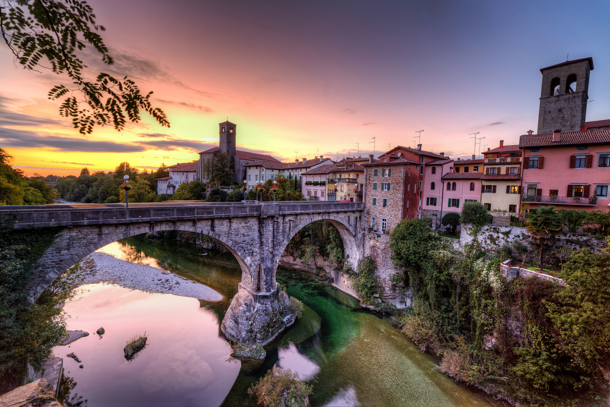
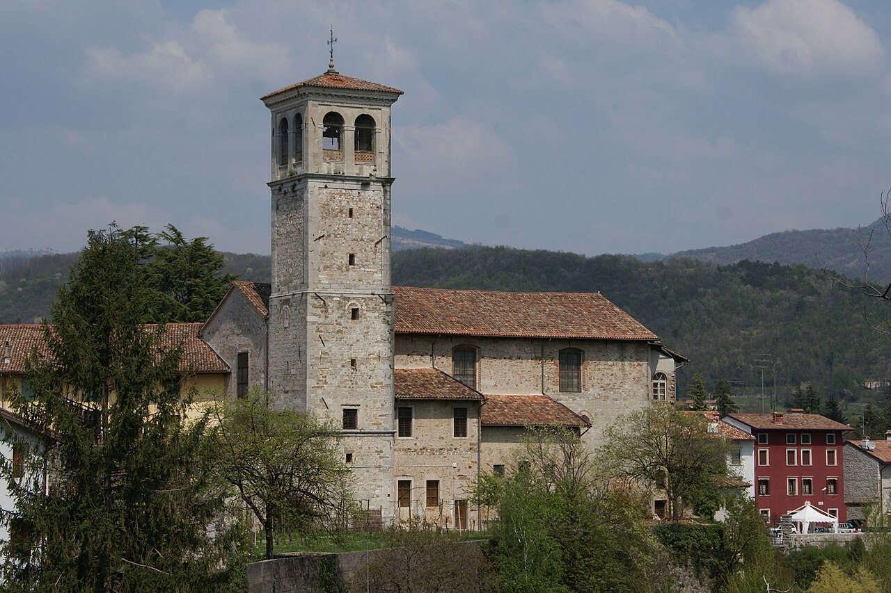
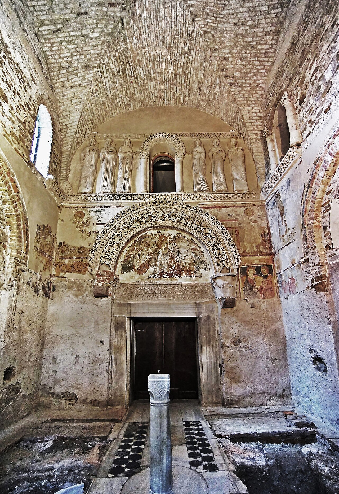
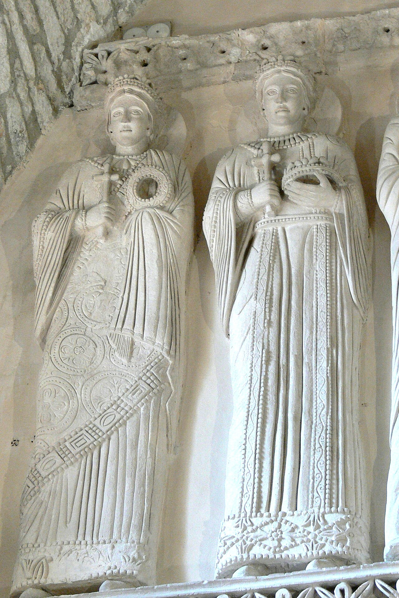
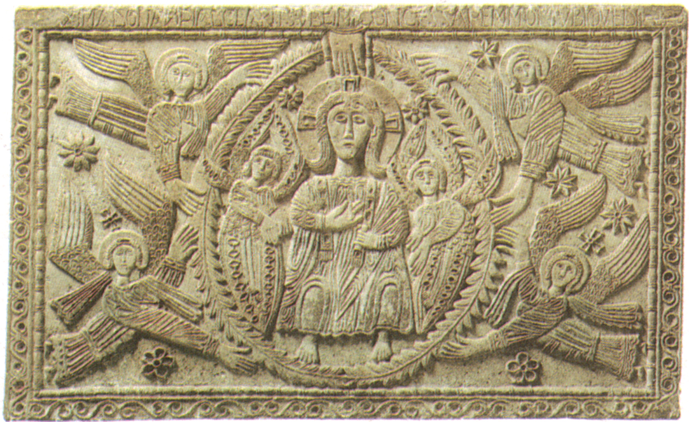
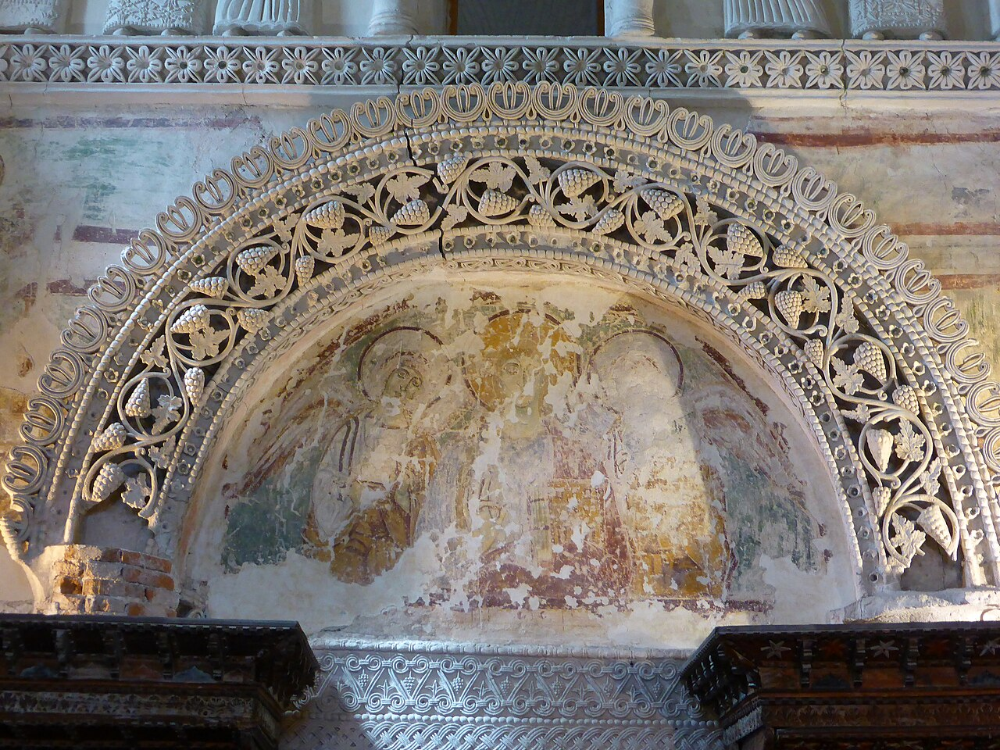

Forum Iulii — Cividale del Friuli
西元 568 年復活節翌日，倫巴底國王阿爾博因（Alboin）率領數十萬族人離開潘諾尼亞（今匈牙利平原），翻越朱利安阿爾卑斯山的皮爾斯隘口（Birnbaumer Pass），勢如破竹直抵齊維達（Forum Iulii），開啟了改寫義大利歷史的倫巴底王國時代。
因阿瓦爾人（Avars）步步進逼，國王阿爾博因集結倫巴底全體部落（約15-20萬人含薩克森等各族僕從），焚燒原有家園，展開破釜沉舟的民族南遷。
朱利安阿爾卑斯山（Julian Alps）的關鍵古道（今斯洛維尼亞境內）。倫巴底人沿著古羅馬雙子之路（Via Gemina）隘口越過山脊，羅馬邊防空虛無法阻擋蠻族狂潮。
阿爾博因在此設立「弗留利公國」，任命其姪子吉蘇爾夫（Gisulf I）為首任公爵鎮守大門，建立日後八百年文明重鎮。
從齊維達出發，倫巴底鐵騎輕易拿下維琴察、維羅納、米蘭，圍城三年攻克帕維亞作為倫巴底王國正式王都。
Base Map: OpenStreetMap & CartoDB Dark Matter / Coordinates: 46.0906° N, 13.4350° E
齊維達在羅馬時代原名為 Forum Iulii（意即「尤利烏斯・凱撒的市集廣場」）。日後這個名號經歷了千年語音流變，演化為今日義大利東北部大區的名字——弗留利（Friuli）。
西元 568 年，國王阿爾博因（Alboin）率領日耳曼系倫巴底人跨越阿爾卑斯山進入義大利半島。齊維達成為倫巴底人奪下的第一座重要要塞，阿爾博因隨即在此任命其姪子吉蘇爾夫（Gisulf I）為公爵，宣告成立了倫巴底人在義大利的第一個公國（Ducato del Friuli）。
這裡不僅是守衛義大利東北門戶的軍事重鎮，更在 8 世紀成為阿奎萊亞宗主教（Patriarch of Aquileia）的駐錫地，造就了權力、信仰與古羅馬-拜占庭文化高度薈萃的黃金時代。

Tempietto Longobardo & Natisone
懸崖之上的聖殿，俯瞰清澈的納蒂索內河峽谷
坐落於聖瑪利亞谷（Monastero di Santa Maria in Valle）內，這座建於八世紀中葉的禮拜堂，被公認為歐洲早期中世紀最神秘且傑出的建築藝術奇蹟之一。

高聳的十字拱頂、中世紀壁畫痕跡，與14世紀精緻的哥德式雕花唱詩班木椅並存。
倫巴底統治階層在此時期展現出強烈的文化整合野心。小聖殿融合了古典晚期的柱頭、拜占庭式的透光迴紋、以及日耳曼貴族對極致灰泥工藝的追求，是「倫巴底文藝復興（Rinascenza liutprandea）」的巔峰象徵。
拱門飾帶以繁複的葡萄葉、藤蔓與串珠滾邊雕琢，中央鑲嵌著玻璃與彩色石飾。這種源自古典地中海的基督教聖體寓意圖騰，在蠻族雕工的手中展現了格外生動深邃的立體層次。
因後來被納入嚴格隱修的本篤會女修道院（Santa Maria in Valle），這座小聖殿數百年來未受戰火洗劫，奇蹟般地在孤立閉鎖中完整封存了1200年前的原始灰泥與神聖氣場。

高逾兩米、歷經十二個世紀依然靜穆屹立的灰泥雕塑群。
「風格混雜著拜占庭的莊嚴肅穆與日耳曼的質樸粗獷——這正是『蠻族』剛剛學會用羅馬古典語彙表達永恆信仰的珍貴瞬間。」
在西牆上方，六位高挑優雅的聖女（殉道修女）分列兩側，宛如在天國門階佇立守候。她們身著垂墜繁複的古典羅馬式長袍（Stola），手持十字架與殉道者的冠冕。
收藏於主教堂基督教博物館（Museo Cristiano）內的拉奇斯祭壇（737–744 AD），由後來的倫巴底國王拉奇斯（Ratchis）為紀念其父公爵佩莫（Pemmo）所下令雕刻。
四面石板以白雲石灰岩浮雕呈現「基督威嚴現身（Maiestas Domini）」、「三博士朝聖」與「聖母探訪」。雕塑風格打破古典比例，將人物的手掌、雙翼刻意放大，充滿原始日耳曼金屬細工裝飾紋理與超現實張力。

基督榮耀像與四天使（Maiestas Domini）
日耳曼符號幾何感與基督教神學想像的獨特融匯
飛跨於翡翠綠色納蒂索內河（Natisone）深邃岩壁之上的十五世紀石橋，是齊維達最具象徵意義的城市地標與名片。
民間相傳，因峽谷水流湍急險阻，村民與魔鬼立約建橋，代價是魔鬼將收取第一個渡橋者的靈魂。機智的村民在橋成後驅趕了一隻小狗過橋，智取了魔鬼。如今，它連接著石板老街與兩岸如畫風光。

步入聖殿前的石柱門廊，保留了中世紀早期珍稀的濕壁畫痕跡與幾何滾邊。光線透過高窗篩灑在灰泥聖像與磨損的古地磚上，時光彷彿凝結於西元八世紀。
2011年，UNESCO將包括齊維達（蓋斯塔爾德城堡區與主教宮建築群）在內的七處義大利代表性遺址列入世界遺產。倫巴底人不再被簡單視為摧毀羅馬帝國的野蠻異族，而是被正名為在古典羅馬文明崩解後，串聯古代歐洲與中世紀基督教世界的偉大文化綜合者。
融合北日耳曼民俗傳統、拜占庭宮廷美學與晚期羅馬基督教文化，奠定歐洲中世紀文明基石。
小聖殿灰泥雕刻與金工飾物，代表了黑暗時代歐洲最卓越、最獨樹一幟的藝術成就。
568年倫巴底王朝入主義大利的起始首站，更為今日「弗留利 Friuli」留下了千古地名傳承。